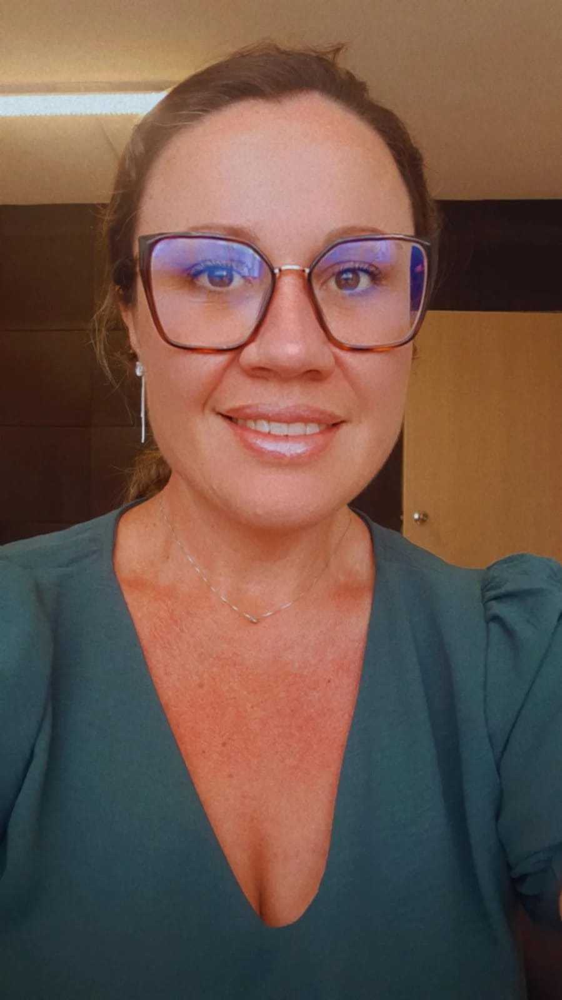

Sobre Mim
Formada em psicologia pela UNESC - Universidade do Extremo Sul Catarinense, pós-graduada em Terapia Sistêmica Familiar pela Rhema Educação e em Transtornos Alimentares, Obesidade e Cirurgia Bariátrica pelo Grupo Educacional Faveni.
Meu objetivo é proporcionar saúde mental e física por meio de práticas e estratégias simples e objetivas, fazendo com que o resultado seja duradouro e consistente, utilizando as ferramentas que a psicologia oferece através de evidências comprovadas.
Minha paixão pela psicologia começou de forma inesperada e transformadora. Aos 9 anos, em uma palestra escolar, uma psicóloga falou sobre respeito com uma atenção e delicadeza que me cativaram completamente. Ela acolheu cada pergunta com uma escuta ativa e palavras suaves, criando um ambiente de confiança e compreensão. Essa experiência marcou profundamente minha infância e plantou a semente do que se tornaria minha vocação.
Apesar de ter seguido diferentes caminhos inicialmente – completei o ensino médio, casei-me e me tornei mãe – aquele sonho de infância nunca desapareceu. A lembrança daquela psicóloga inspiradora permaneceu viva em minha memória, me lembrando constantemente do meu desejo de ajudar os outros de maneira significativa.
A decisão de retomar esse sonho veio de forma inesperada, através de uma postagem em uma rede social. Decidi embarcar na jornada desafiadora de estudar psicologia, enfrentando cinco anos e meio de intensos estudos e desafios, incluindo uma gestação no último ano da graduação. Esses anos foram cruciais para minha formação, não apenas acadêmica, mas também pessoal.
Cada obstáculo superado durante a faculdade reforçou minha resiliência e empatia – qualidades que são a base da minha prática profissional. Aprendi que ouvir sem julgamentos e acolher as experiências dos outros são habilidades essenciais para oferecer um atendimento psicológico de qualidade. Minha formação foi enriquecida por experiências que me prepararam para compreender e apoiar meus pacientes com uma abordagem acolhedora e humanizada.
Hoje, estou comprometida em ajudar meus pacientes a enfrentar seus desafios com a mesma determinação e fé que me guiaram até aqui. Acredito que cada pessoa tem dentro de si a força necessária para alcançar seus sonhos e superar dificuldades. Meu objetivo é ser uma facilitadora nesse processo, oferecendo um espaço seguro e empático para que cada indivíduo possa explorar suas emoções e encontrar caminhos para uma vida mais plena e equilibrada.
Nunca esqueça de seus sonhos. Se eles estão dentro de você, é porque têm o tamanho da sua força. Acredite em você.